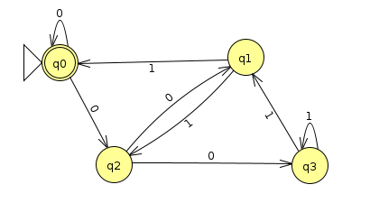
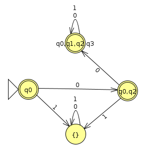
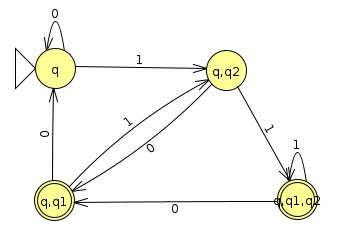

Week 3: NFAs And DFAs Have Equal Recognition Power
Chris Tralie
It might seem at this point like NFAs are way more powerful than DFAs. Every DFA is trivially an NFA with no branching, but it seems like we can represent more complicated things with an NFA. Amazingly, though, NFAs are no more powerful than DFAs, in the sense that it is possible to construct a DFA for any NFA. In other words, like DFAs, NFAs also recognize the class of regular languages.
To prove this, we're going to do another reduction where we show that we can reduce an arbitrary NFA to a DFA. We'll do a reduction similar to the one we did when constructing DFAs to recognize the union of two regular languages; that is, we'll create "meta DFA states" that are a tuple of all states we could possibly be in after observing some amount of symbols. For instance, in the first NFA example we saw we had the following tree depicting different machine clones:

So we see that at different points in time, we were in q by itself, but we were also in (q, q2), (q, q2, q0), (q, q0), q2, and q0. So what we'll do is create a DFA whose states are all possible subsets of states in the NFA, and then add appropriate arrows. More formally, create a DFA (Q', Σ', δ', q', F'), where
-
where P(Q) is the power set of Q, or the set of all subsets of Q (including all of Q and the emptyset)
\[ Q' = \mathcal{P}(Q) \]
-
\[ \Sigma' = \Sigma \]
-
\[ \delta'(S, c) = \cup_{s \in S} \delta(s, c) \]
In other words, we add an arrow from the state in P(Q) corresponding to the set S to the state in P(Q) corresponding to the union of all states that can be reached from elements in S in the NFA.
-
\[ q' = q \]
-
\[ F' = \{ S \in P(Q) | \exists s \in S, s \in F \} \]
In other words, an element of the power set P(Q) is considered an accept state if at least one of its elements is an accept state in the original NFA.
Just as we argued for the union, we see that this new DFA (Q', Σ', δ', q', F') is able to simulate all possible machines in parallel, and hence, it does the same thing as the original NFA (Q, Σ, δ, q, F).
NFA → DFA Example 1
It may be easier to break this all down with some examples. Let's return to the last example from the NFA notes:

We have the following transition table for δ' in this case:
| a | b | |
| (q0, q1) | q0 | (q0, q1) |
| q0 | q0 | {} |
| {} | {} | {} |
- We start off in states q0 and q1, which we represent with the meta state (q0, q1), and we consider what happens to each of these. When we see an a, q0 stays at q0, but q1 actually has a dead end, so this collapses to just q0. When we see a b, q0 has a dead end, but q1 splits into q0 and q1, so this can be viewed as a self transition (q0, q1) -> (q0, q1)
- When we're at q0, a causes is to stay there, but there's a dead end at b, so we actually transition to a null, which I indicated with {}. This is the empty state in the power set.
- Nulls (or as some in class call, "Azkaban") are like places that we get stuck at and can never recover from, so they transition to themselves for all characters
- Accept states are bolded in the left column. An accept state in an DFA we construct from an NFA is any meta state that contains at least one accept state from the NFA.
When we draw this out graphically, we see the following (Click here to view the JFLAP file)

And actually, if we stare at this, we can see that it accepts anything that doesn't contain an "ab". This is neat, because we just discovered that this is precisely the language that's the reverse of the language we started with of strings that don't contain a "ba."
NFA → DFA Example 2
Let's look at a divisibility example. First, we'll consider a DFA that recognizes the language of binary strings divisible by 4 when read from left to right. Recall that we need states for each remainder: 0, 1, 2, and 3, and the transition between the states is
\[ \delta(q_k, b) = q_{(2k + b) \% 4} \]
This leads to the following DFA (Click here for the JFLAP file)

When we reverse the arrows and the accept/final states, we get the following NFA
Here's the transition table we get, starting at the start state q0 and keeping track of what states emerge on different paths that come out of that. I've bolded the states that contain the original accept state q0 as one of the options, and these will be the accept states in the new machine.
| 0 | 1 | |
| q0 | (q0, q2) | {} |
| (q0, q2) | (q0, q1, q2, q3) | {} |
| (q0, q1, q2, q3) | (q0, q1, q2, q3) | (q0, q1, q2, q3) |
| {} | {} | {} |
Shown as a state diagram, this is what it looks like (Click here) to download the JFLAP file):
Actually, if we examine this DFA, what we notice is that all strings that start with 00 and are followed by anything are accepted. This makes perfect sense for binary numbers divisible by 4, which, from right to left means that the 1s place and the 2s place are 0.
NFA → DFA Example 3
Below is an example of an NFA that recognizes the language of binary strings that have a 1 in the 2s place (Click here to download the JFLAP file). You'll notice that it has two 1 transitions out of the initial state q. We can think of this as the machine "hedging its bets" when it reads a 1: it can decide it's about to look at the 2s place (transitioning to q2) or whether it hasn't gotten there yet (staying at q).

Below is filling in the NFA to DFA table keeping track of the states as we go along, starting at the start state q, and filling in state tuple transition rules as we see new tuples, bolding the tuples that contain the accept state q1 as one of the states
| 0 | 1 | |
| q | q | (q, q2) |
| (q, q2) | (q, q1) | (q, q1, q2) |
| (q, q1) | q | (q, q2) |
| (q, q1, q2) | (q, q1) | (q, q1, q2) |
Below is a state diagram for this DFA (Click here to download the JFLAP file)
Actually, if we rename the states, we get some insight into what this machine is doing

In fact, it's just keeping track of the last two characters it's processed (assuming leading zeros), and if the second to last one happens to be a 1 when it finishes, it accepts. We can see then how this is logically equivalent to what we specified with the NFA.